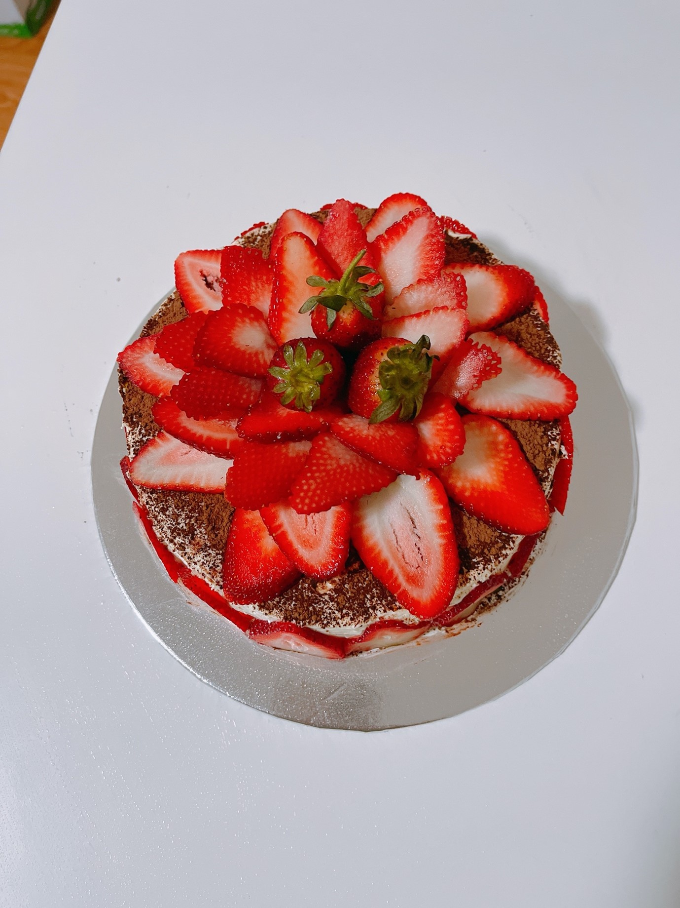
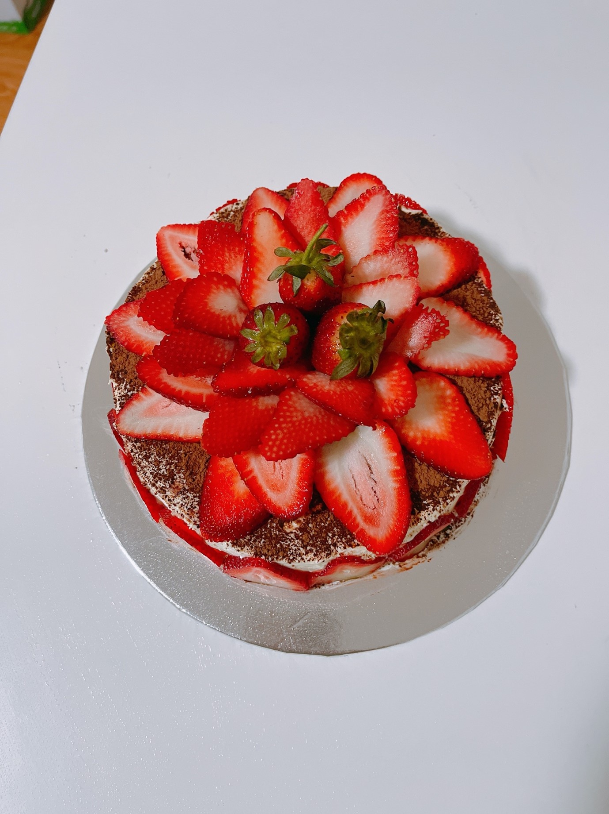
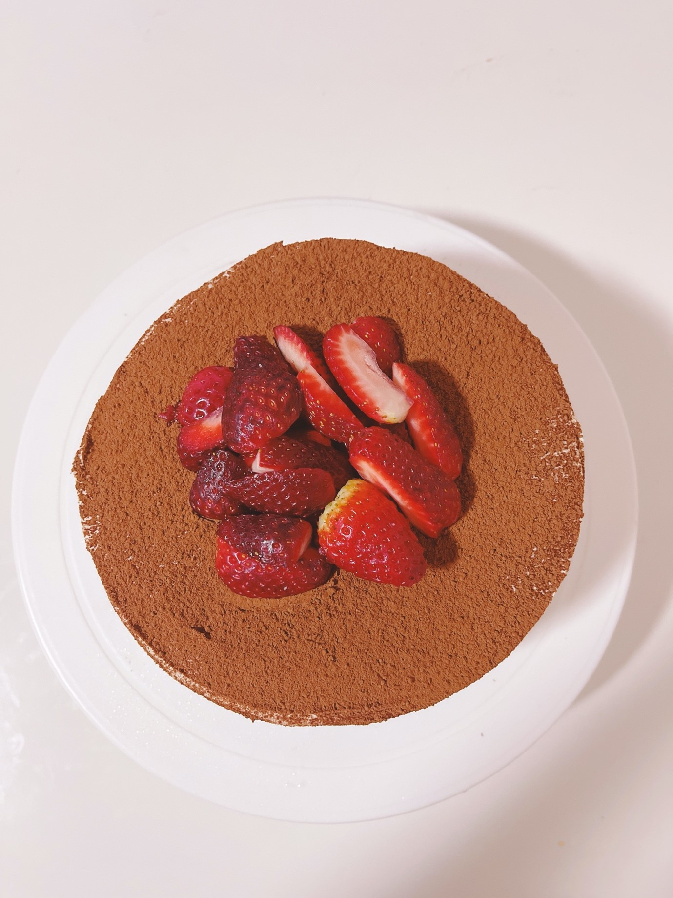
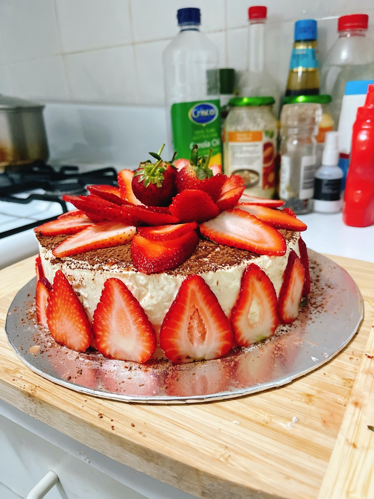

CCRC's Lockdown Cookbook
UNSW Climate Change Research Centre Lockdown Recipes
Tiramisu Cake
 

Submitted by: Phuong Loan (Juniel)
Background
My husband and me really like coffee. We went to coffee shop in most dating time. So, I just make a coffee-flavour cake for my 1st anniversary.
Original Recipe: Savoury Days Kitchen
Ingredients
- A. Hong Kong cotton sponge cake
- 4 egg yolks (18 - 20 gram/ yolk)
- 20 gram (1-1/2 Tbsp) caster/ superfine sugar
- 40 ml (3 Tbsp minus 1 tsp) milk
- 30 ml (2 Tbsp) vegetable oil
- 1/2 tsp vanilla extract
- 50 gram (1/2 cup minus 1-1/2 Tbsp) all purpose flour
- 50 gram (1/3 cup) corn starch
- 4 egg white (30 - 35 gram/ egg white) a pinch salt 1/4 tsp cream of tartar
- 70 gram caster sugar (6Tbsp) - sifted B. Coffee liquor syrup
- 40 ml (3 Tbsp minus 1 tsp) strong coffee (freshly brewed preferred_ 20 ml (1-1/2 Tbsp)
- Rum 3 ml (1/2 tsp)
- vanilla extract 1 tsp caster sugar C. Tiramisu cream
- 200 gram (7 oz.) Mascarpone cheese - at room temperature
- 70 gram (6 Tbsp) caster sugar - sifted 300 ml (1-1/4 C) whipping cream (35 - 40% fat) - cold - 15 ml (1 Tbsp) Rum
- 5 ml (1 tsp) vanilla extract
- * NOTE: - Mascarpone cheese can be substitute with cream cheese, the Tiramisu cream will be a little bit salty but still tastes great.
Instructions
Please follow the guide in this video. They are every detail and helpful :D. And believe me, you will love it
 